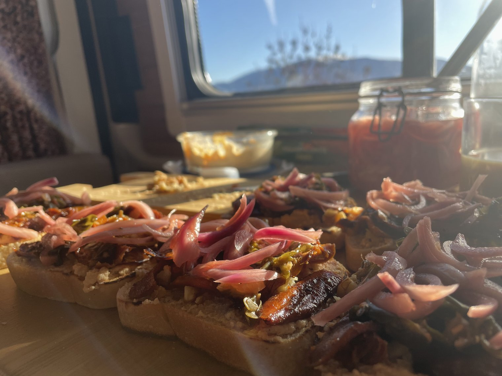

Tostadas de hummus con verduras asadas y cebolla encurtida
Ingredients
4×
- 2 zanahorias
- 1 berenjena
- ¼ de col
- aceite de oliva
- sal
- 8 rebanadas de pan
- 200 g de hummus
- cebolla morada encurtida
- queso rallado

Preparación
Paso 1
Cortar 2 zanahorias, 1 berenjena y ¼ de col en trozos, aliñar con aceite de oliva y sal y asar 30min a 200ºC.
Paso 2
Tostar 8 rebanadas de pan y untarlas con 200 g de hummus.
Paso 3
Repartir las verduras asadas por encima y terminar con cebolla morada encurtida y un poco de queso rallado.